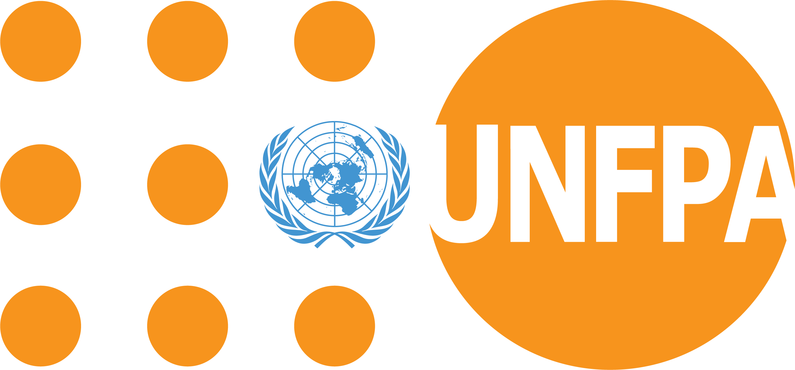

Espacio seguro - Ecuador y región Andina
Salud sexual,
relaciones y derechos
sin rodeos ni tabúes.
Información verídica, fresca y entre panas. Tu espacio seguro para aprender a tu ritmo, sin juzgamientos.
Contenido para ver y escuchar
La Tribu se mueve.
Videos, podcasts e ideas para aprender a tu ritmo en el formato que más te sirva.
Historias reales, información clara
Episodios para escuchar y compartir.
Filtra las conversaciones por tema. Todos los capítulos viven aquí, en una sola página.
Zona SOS 72 horas
¿Tuviste un accidente o una situación de riesgo?
Actuar pronto puede marcar la diferencia. Respira: mereces atención, información y acompañamiento.
¡Respira! No estás sola/o.
La atención en salud es un derecho confidencial.
Ve al Centro de Salud.
El MSP atiende gratis y de forma confidencial para PAE o prevención de ITS/VIH, sin necesidad de ir con un adulto.
Líneas directas.
Filtro anti-mitos
Lo que dicen por ahí.
Lo que dice la evidencia.
Haz clic en cada tarjeta para descubrir la realidad.
Kit para guardar
Recursos que caben
en tu celular.
Descarga, comparte y vuelve a consultar cuando haga falta.
{kind=link}
{kind=link}
{kind=link}
Únete a la tribu
Tu pregunta puede ser el próximo episodio.
¿Tienes un mito, duda o tema que te gustaría que hablemos? Escríbelo aquí. Es 100% anónimo.
Alianzas que acompañan
Confían en nosotros.
Trabajamos junto a organizaciones y aliados que impulsan la educación, la salud sexual y los derechos de adolescentes y jóvenes en la región.

Contexto del proyecto
Más que un podcast:
una tribu que crea.
La Tribu Sin Tabú combina podcast, videos, infografías y recursos para hablar de salud sexual, salud reproductiva y derechos en Ecuador y la región Andina.
Ideas jóvenes para transformar conversaciones.
Nacimos en un espacio de innovación y participación juvenil.
- Soluciones comunicacionales culturalmente pertinentes.
- Prevención del embarazo adolescente.
- Información pública convertida en herramientas compartibles.
El equipo detrás de la iniciativa.
Impulsamos creatividad, tecnología e incidencia social para defender los derechos y la salud integral de adolescentes y jóvenes.